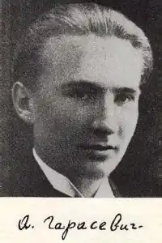

Андрiй Гарасевич народився 13 серпня 1917 р. у Львовi. Трагічно загинув в Альпах 24 липня 1947.
В 1921 р. переїжджає з родиною на Закарпаття. Тут стає членом Українського Пластового Уладу.
Початкову освiту здобуває в Раховi та Хустi, а з 6 класу (1934) гiмназiї навчається в Ужгородi. Тут одночасно починає музичну освiту, вивчаючи гру на фортепiано в проф. Софiї Днiстрянської. Гiмназiю закiнчує матурою в 1936 р. Починає лiтературну дiяльнiсть, друкується з 1935 р. в ужгородських мiсцевих газетах, а дальше в журналах та часописах Львова та iнших галицьких мiст ("Обрiї", "Напередоднi"). Деякi твори появлялися пiд лiтературним псевдонiмом Василь Сурмач. З цього ужгородського перiоду походять його патрiотичнi сонети, якi тематикою тiсно зв'язанi з морем та козаччиною. Вони появляються вперше у Празi в 1941 р. п.з. "Сонети". В цей час вiн працює пiд лiтературним впливом Михайла Мухина та Ол. Ольжича (О. Кандиба). Восени 1937 р. Гарасевич переїжджає до Праги. Тут поступає на студiї права в Карловiм унiверситетi, але по роцi переходить на фiлософський факультет (лiтературознавство). В Празi його лiтературна дiяльність сильнiшає i вiн стає членом т. зв. празької групи поетiв до якої належали Ольжич та Мосендз. З цього перiоду походять його твори тематично зв'язанi з старою Прагою, якi носять ще студентський характер. В циклi "Легенди й образи" поему "Плач Еремiї" можна вважати верхом його творчостi з патрiотичною тематикою. Тут на його лiтературну творчiсть мають вплив Р. Рiльке, М. Вороний, Є. Маланюк, О. Блок та старовинна Прага. Творчiсть Є. Маланюка стала темою його докторської дисертацiї. В 1945 р. з родиною осiдає в Берхтесгаденi. На емiграцiї вiдновлює свою дiяльнiсть в УПУ. Тут до його перших двох захоплень (поезiя та музика) долучається третя й остання – альпiнiстика. Вона сильно вiддзеркалена в його поетичнiй творчостi цього часу. В циклi "Самотнiсть" бачимо Гарасевича таким, яким вiн був сам собою: нiжним, стриманим, прямолiнiйним, захопленим романтикою та сповненим поривiв до далекого, вершинного. На емiграцiї друкується його проза в журналi "Арка". В музицi вважався добрим виконавцем, особливо Бетховена. Альпiнiстика, його третя любов була останньою. Їй вiн вiддав своє цiнне й таке багатонадiйне життя. Свою захоплену любов до гірських вершин, до здобування їх, що нею запалював він своїх друзів пластунів і поетів, свій незрозумілий інколи і далекий для людей із дальшого його оточення порив до гірської далини висловив А. Гарасевич у своєму поетичному нарисі "Все вище". 24 липня 1947 року обірвалася нитка натхненного життя людини. Тільки згодом стало відомо, що загинув, зірвавшись зі скельної стіни гори Вацман і впавши із висоти 800 метрів, українець, пришелець з далекої Срібної Землі, поет і музикант, пластун і альпініст Андрій Гарасевич… Вiн є iдеалом людини, що здiйснювала всi свої спроможностi. Ми цiнуємо його глибоку любов до природи, яку вiн так добре знав та хотiв ще глибше пiзнати. Його любов до краси, до слова та музики є нам прикладом ширити красу й щастя. Найбiльшим прикладом для нас є його любов до Батькiвщини. На чужинi вiн любив її, болiв її недолею, радiв її успiхам. Таким був Андрiй Гарасевич – один із перших у рядах молодих поетів, що для них поезією було не тільки слово, вірш чи пісня, а й саме життя, чин і дія.